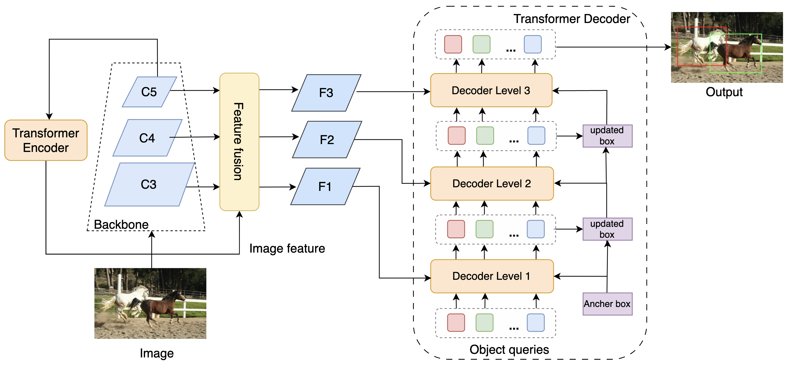
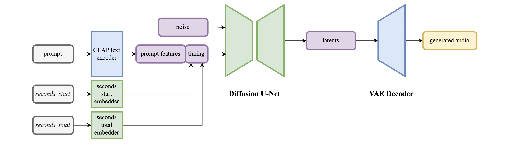

August 2023
Detection Transformer
with Multi-Level DETR
In this project, we implemented DETR with a Multi-Level Decoder (MLD-DETR). Multi-scale features are fused by a customized feature-fusion module and arranged in a cascade within the transformer decoder, addressing inefficiency and achieving state-of-the-art performance with fewer parameters.


August 2024
Classical Music Classifier
The Classical Music Classifier is a fine-tuned model built on CLAP and optimized on the MAESTRO dataset for classical piano works. It addresses CLAP’s limitations in distinguishing subtle nuances in classical repertoire, achieving high accuracy on genre and composer classification.
April 24, 2023
Adverisal Robustness towards Different Vision Transformer
There exists numerous different structure of vision transformers at present. In this work, we firstly divide them into different categories, then perform adverisal trainings and adverisal attacks to these categories, to testify which kind of structure is more robust
January 2025
GPT-2 from Scratch
Implemented a GPT-2–style transformer language model entirely from scratch in PyTorch, inspired by Andrej Karpathy’s microGPT. Includes tokenization, multi-head self-attention, positional encodings, layer normalization, and training on custom corpora to generate coherent text.
February 2025
Sentence-BERT Fine-Tuning
Fine-tuned Sentence-BERT on semantic textual similarity tasks to produce robust sentence embeddings. Evaluated on the STS Benchmark, achieving high correlation with human judgments for fast similarity search and clustering.